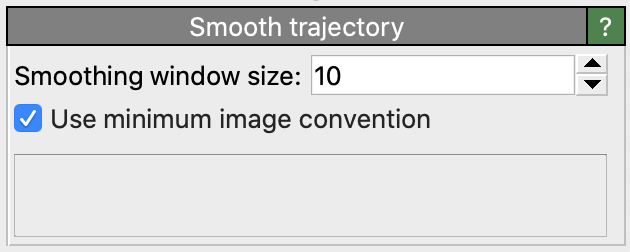
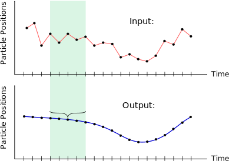
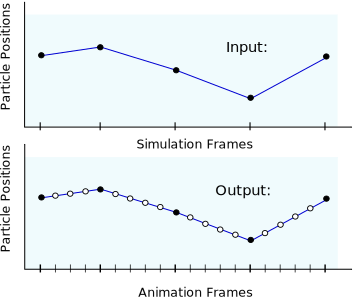

Smooth trajectory
{kind=link}
This modifier reduces vibrations in the particle motion by combining several successive snapshots of a simulation trajectory or by interpolating in between successive snapshots. It can be used to create smooth-looking animations from a relatively coarse sequence of simulation snapshots and reduce fluctuations or thermal vibrations in particle trajectories. Depending on the value of the parameter Smoothing window size, the modifier will either perform a time-based averaging of the particle coordinates over several input simulation frames or a linear interpolation between consecutive frames, see below.
If the particles have orientational information associated with them, then
the modifier will smooth or interpolate the Orientation particle property in the same way as the
particle positions. Furthermore, smoothing will also be applied to any particle property that is scalar and continuous,
i.e., which has a single vector component of data type float.
Averaging mode
If the Smoothing window size is set to a value larger than 1, then the modifier replaces the particle positions in the current frame with time-averaged coordinates computed over a time interval centered around the current frame of the given size, i.e. a sliding window. This mode can be used to reduce fluctuations (e.g. thermal vibrations) in the particle trajectories.
{kind=link}
Interpolation mode
If the Smoothing window size is set to 1, the modifier will generate additional intermediate frames in between consecutive snapshots of the input trajectory via linear interpolation. This mode can be used to create more smoothly looking animations from coarse simulation snapshot sequences.
{kind=link}
In order to make use of this mode, you should reduce the playback rate of the loaded simulation sequence such that OVITO will render N output animation frames per input simulation snapshot. See this section on how to do this. The smooth trajectory modifier can then be applied to dynamically compute the particle positions at intermediate sub-frames of the animation.
Periodic boundary conditions
The option Use minimum image convention activates the automatic unwrapping of particle coordinates during the interpolation computation, which is needed to handle discontinuities in the trajectories correctly. Normally you should leave this option turned on if the input particle coordinates are given in wrapped form, i.e., if the simulation code has mapped the particles back into the primary simulation cell when using periodic boundary conditions.
If the input particle coordinates are in unwrapped form, i.e., if the input trajectories are already continuous, you can safely turn this option off. The modifier will then take the input particle coordinates as is when computing averages of consecutive snapshots.
See also
ovito.modifiers.SmoothTrajectoryModifier (Python API)